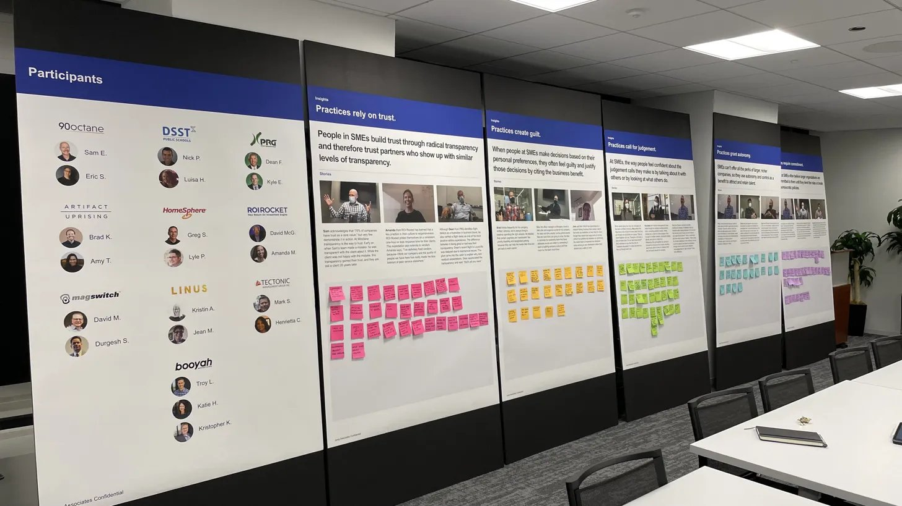
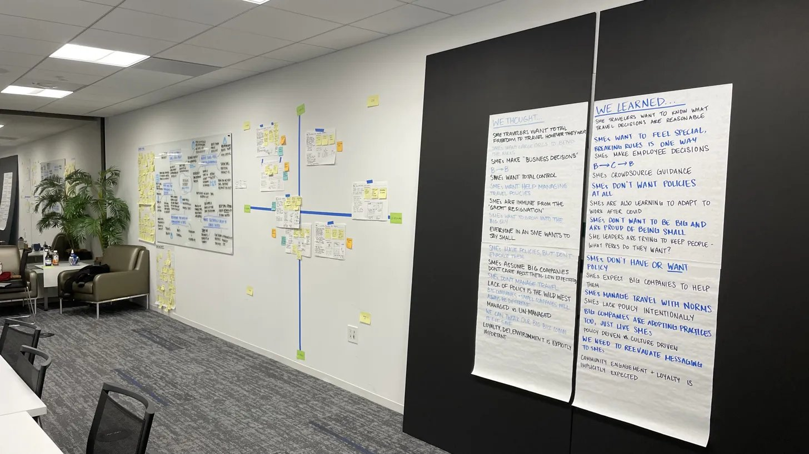
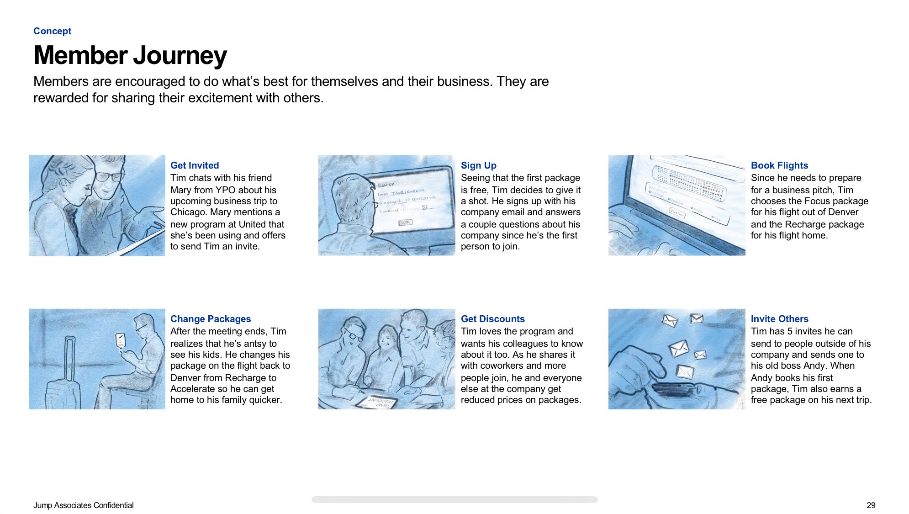
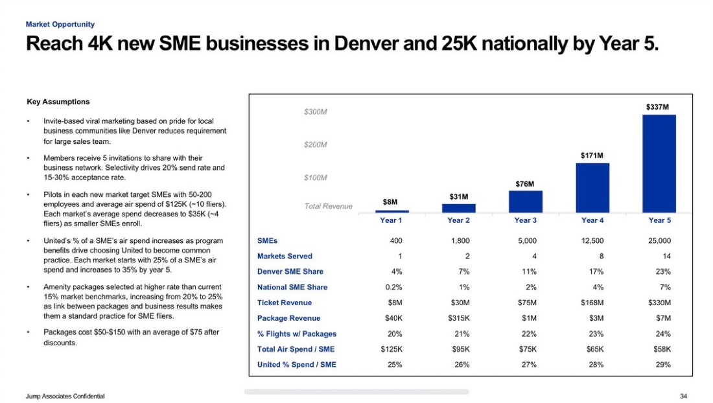

A major airline wanted to better engage small business customers, a segment caught between individual frequent flyer programs and large corporate accounts. I led the end-to-end project, managing a team of three strategists across secondary research, ethnographic fieldwork, a video-based stakeholder work session, and a loyalty program concept with a five-year financial model.
Most airline loyalty programs were designed for two audiences: individual frequent flyers and large corporations with managed travel accounts. Small businesses, traveling regularly but without a procurement team or negotiated corporate rate, had no purpose-built offering.
The airline had a hypothesis that a dedicated small business program could unlock meaningful revenue. As Project Lead, I scoped the engagement and managed a team of three strategists through each phase: secondary market sizing, ethnographic fieldwork with CEOs and CFOs at their offices, a one-day video-based stakeholder work session, and a concept deliverable with a member journey, product roadmap, P&L, and five-year growth trajectory.

Insights session room with participant profiles and research findings panels.
My team recruited CEOs and CFOs from 10 small businesses and conducted 3-hour in-context ethnographic interviews at each company's office. Seeing people in their actual environment, surrounded by their team and the rhythms of their workday, produced a quality of insight that a conference room cannot replicate.
The central finding was a structural distinction about how small businesses govern behavior. Large companies operate by explicit policies. Individuals operate by personal preferences. Small businesses occupy a different mode: practices, informal customs grown by culture, flexible but ambiguous, and enforced by social norms rather than rules.
| Policies | Practices | Preferences |
|---|---|---|
| Explicit rules | Implicit customs | Personal desires |
| Written by the company | Grown by culture | Developed by intuition |
| Clear, but restrictive | Flexible, but ambiguous | Comfortable, but guilt inducing |
| "I have to…" | "I should…" | "I want to…" |
Four insights emerged from analysis of the interview data, each a specific implication of the practices dynamic:
Rather than presenting findings in a deck and moving to a whiteboard, I ran a one-day video-based insights work session with stakeholders from IT, Sales, Product, and Marketing. I curated clips from the ethnographic interviews so stakeholders could hear business owners describe their peer networks, travel decisions, and relationship with policy in their own words.
Stakeholders then ideated from that shared context rather than from a summary slide. The session produced a range of concepts, each evaluated across desirability, viability, and feasibility before converging on a direction. My team supported facilitation and captured ideation output in real time.

The work session room: synthesis wall capturing assumptions tested against what the research actually showed.
The concept that emerged was shaped directly by the practices insight. A standard points program would replicate the individual-flyer model. A managed corporate account would impose the policy model. Neither fit how small businesses actually operate.
The program is invite-only: members refer peers from their professional network, not the airline. Joining through a trusted contact changes the relationship from transactional to communal. Individual travelers choose packages that flex around their business needs, and benefits extend beyond flights to reduce broader business friction.


The concept deliverable included a member journey, a three-horizon product roadmap, and a financial model projecting growth from a single hub city pilot to national scale.
The financial model projected growth from a single hub city pilot to 14 markets over five years, reaching 25,000 national members and 4,000 SMB partnerships.
The video-based work session format is the most effective tool I have used for closing the gap between research and design. When stakeholders hear a business owner describe how they make decisions in their own words, they internalize the customer in a way a summary slide cannot produce. The result is a shared mental model across functions that reduces re-litigation of findings later. I now build clip selection and editing time explicitly into the project plan from the start. This project also reinforced the value of financial modeling as a design deliverable: attaching a P&L and growth trajectory to the concept changed the conversation with stakeholders from "interesting" to "how do we pilot this."
"Lauren is someone you always want on your team. She's enthusiastic, wicked smart, and incredibly intentional."
— Mike Smith, Jump Associates